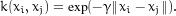
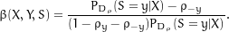
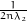

____________________________________________________________________________
Assignment 2
_____________________________________________________________________
|
Tutors: |
Nicholas James, Zhuozhuo Tu, Liu
Liu |
|
Group
members: |
Yutong Cao (ycao5602) 470347494, |
|
Chen Chen (cche5002) 480458339, |
|
|
Yixiong Fang (yfan5798) 480133344.
|
Abstract
This
report documents three classification algorithms designed for datasets with
class-dependent classification noise (ccn). They are based on the soft-margin
support vector machines. We first preprocess the datasets by normalisation and
principal component analysis, and
estimate the flip rates by a density ratio method. We then propose a new kernel
that is designed against ccn based on
Expectation Maximisation . We give a rigorous proof that the proposed kernel is
positive definite. In addition, we implement the Importance Reweighting method
proposed by Liu and Tao [2016]. Our third algorithm is to relabel the
contaminated labels by a pre-training model heuristically. Our numerical
experiment applies regression to estimate the complexity of the three
algorithms. We also use a nonparametric hypothesis test to compares their
accuracies. We find the first two algorithms provide similar accuracy. However,
the Expectation Maximisation has a shorter running time. The heuristically
proposed relabelling method gives inconsistent result during resampling.
Contents
1 Introduction
2 Related work
3 Methods
3.1 Base
model: support vector machine
3.1.1 Support vector machine resists over-fitting
3.1.2 Support vector machine is not robust to label noise 

3.2 Preprocess
3.2.1 Photometric normalisation improves classification performance
3.2.2 Principal component analysis reduces dimensionality
3.3 The
original dataset is balanced
3.4 Flip
rates estimation
3.4.1 Density ratio method estimates conditional
probability
3.4.2 Minimum of conditional probability estimates flip rates
3.5 Method
1: Expectation Maximisation
3.5.1 Expectation Maximisation derives loss function
3.5.2 Bernoulli random variable models latent label noise
3.5.3 Modifying kernel improves robustness against label noise
3.5.4 Proof: proposed kernel matrix is positive definite
3.6 Method
2: Importance Reweighting
3.6.1 Sigmoid function estimates conditional
probability
3.6.2 Reweighting coefficient improves robustness against label noise
3.7 Method
3: heuristic approach by relabelling
3.7.1 Conditional probability filters samples
3.7.2 Pre-training model corrects labels
3.8 Tuning
hyperparameters
3.9 Bootstrap
constructs confidence intervals and hypothesis tests
3.9.1 Bootstrapping percentile confidence intervals
3.9.2 Kolmogorov-Smirnov test compares the accuracy of algorithms
4 Experiments
4.1 Experiment
Setting
4.2 Preprocessing
4.2.1 Photometric normalisation improves convergence
4.2.2 Principal component analysis speeds up algorithms
4.3 Discuss
flip rate
4.4 Selected
hyperparameters
4.4.1 Hyperparameters for algorithms
4.4.2 Hyperparameters for algorithms
4.5 Regression
estimates running time
4.6 Compare
algorithms and datasets
4.6.1 Hypothesis tests justify visualisations
4.6.2 Expectation Maximisation is the fastest
4.6.3 cifar is more difficult
to classify
4.6.4 Relabelling approach is inconsistent and less robust
4.7 Discussion
and personal reflection 

5 Conclusion
1
Introduction
This report documents our modifications to the soft-margin support vector machine (svm) to improve its performance against class-dependent classification noise (ccn).
The capability of learning with label noise is crucial for training machine learning models. According to the Law of Large Numbers [Hrdle and Simar, 2007], the empirical risk converges to the expected risk asymptotically as the sample size approaches infinity. However, classification labels in large dataset can be easily corrupted. For example, images are sometimes labelled manually by employing casual staff with minimal training. In this case, training a classification model using these images requires special treatment that accounts for noisy labels. Section 3 proposes three such treatments based on svm to increase the accuracy with the presence of ccn.
Section 3.5 proposed a learning method by deriving a new loss function using Expectation Maximisation [Bishop, 2006, p.423]. This method models the label noise using a Bernoulli distribution, and includes the label noise information into the loss function of svm. This method is first studied by Biggio et al. [2011] for random classification noise (rcn), and we extend it to ccn.
Section 3.6 implements importance reweighting proposed by Liu and Tao [2016]. This method uses a reweighting coefficient to reweight the loss function for each sample point. We fit svms with the given noisy data. We then implement cross-validation of svm models to predict the probabilities of classifying each sample, and then use these probabilities to calculate the weightings.
Section 3.7 introduces a filtering approach based on the work of Brodley et al. [1996]. This method follows the heuristic observation that the predicted probability of a sample point with the wrong label is usually close to 0.5, where our model is not able to classify confidently. In the meanwhile, the predicted classification result of the contaminated label is likely to be different from the observed label. We then exclude the potentially contaminated data points and train the model again with the remaining data which seems to be cleaner.
To fairly compare these three approaches of attacking noisy data, all of the three methods implement the same base classification algorithmsvm. We use svm because it is proved to has a strong generalisation ability [Jin and Wang, 2012, Seeger, 2003, Cortes and Vapnik, 1995], and usually gives high classification accuracy when turned properly [Fernndez-Delgado et al., 2014]. In addition, svm is more susceptible to label noise than many other algorithms [Frnay and Verleysen, 2014], so we can better assess our modification to the original classification algorithm.
Section 4 applies the three methods proposed in Section 3 to two sets of noisy data with binary labels, both containing 10,000 images. The first dataset is a subset of the fashion-mnist database and the second dataset is from the cifer database. For each dataset, Section 4 also compares the simulation results, including accuracy and running times, from the three methods. In addition, we estimate the flip rate ρ-1, ρ+1 using the method proposed by Liu and Tao [2016]. Section 4 also compares our estimation with the true values.
2
Related
work
Many recent publications discuss the topic of
learning with label noise. One popular approach is to use classification
algorithms that are proved to be robust to label noise. Frnay and Verleysen [2014] reported their findings that 0 - 1 loss and
least-squares loss are robust loss functions to uniform
label noise. They also found the method of bagging is robust against label
noise. Bagging detects the contaminated samples by estimating the variability
of its base classifier when including and excluding them. Frnay and 
 Verleysen [2014] also discussed filtering methods
for learning with label noise. These methods remove mislabelled data before
training a final model. Our second model follows this idea by excluding data
points with vague predictions. Instead of removing the contaminated candidates
directly, Yang et al. [2018] proposed a filter-like method that estimating the probability of mislabelling
for each sample.
Verleysen [2014] also discussed filtering methods
for learning with label noise. These methods remove mislabelled data before
training a final model. Our second model follows this idea by excluding data
points with vague predictions. Instead of removing the contaminated candidates
directly, Yang et al. [2018] proposed a filter-like method that estimating the probability of mislabelling
for each sample.
These approaches mentioned above do not require noise rates. Although this makes the approaches general, the methods may not be able to handle highly contaminated dataset, especially when the noise rates are given. Biggio et al. [2011] apply an Expectation Maximisation method to fit data with rcn. This method reformulates the loss function to include noise rate information. The label noise is not usually observed. They use the expected value as an estimation of unobserved labels contaminated by noise. Section 3.5 extends his method to solve problems with ccn. The idea behind this method is straightforward and intuitive, but simulation results in Section 4 find it is less accurate than the method of importance reweighting proposed by Liu and Tao [2016]. Liu and Tao [2016] assigned a weight to each sample according to its probability of being contaminated. These probabilities are estimated from a pre-train model. They also provided an efficient method for estimating the noise rate. However, the need for fitting the model twice makes the method of reweighting slow.
3
Methods
3.1
Base
model: support vector machine
We use svm with a Gaussian kernel as the base classification method for this task because of its generalisation ability.
Let vector xi to represent the ith image in the dataset. The corresponding true classification labels yi of images are corrupted by ccn, and we only observe the contaminated labels si. The clean and observed label yi and si are both binary variables drawn from set . We use n to denote the number of samples, and p to denote the number of features of the input dataset.
svm with Gaussian kernel was first published by Boser et al. [1992]. Cortes and Vapnik [1995] proposed improvement on the original svm with soft-margin to avoid the over-fitting problem. The svm is to minimise the Hinge loss function
|
|


Here, w is
the weighting factor, b is
a constant. We classify the ith
image into category 1 or -1 when w ⋅ xi - b ≥ 1 or w ⋅ xi - b ≤ -1, respectively. This loss function not only
penalises points that misclassified, but
also points that are closed to the dividing hyperplane, with a regularisation
term λ∥w∥2. The decision function of svm is
|
|
(1) |
3.1.1
Support
vector machine resists over-fitting
Fernndez-Delgado et al. [2014] asserted that svm was very likely to be one of the most powerful classifiers, by comparing 179 classification algorithms over 121 large datasets. The distances between data points and the dividing hyperplane give an intuitive estimate of the generalisation ability of the trained svm model [Hastie et al., 2001].
we use svm as our classification method as of its strong generalisation ability. This section proposes three different approaches to modify ordinary svm to attack label noise problem. However, we do not have access to a test dataset with true labels (xi,yi) to verify the generalisation ability of our three different models, which are all trained by noisy data (xi,si). In svm, the number of support vectors provides a natural and free metric of its generalisation ability [Hastie et al., 2001], and hence use of test dataset is not mandatory. Using this geometry factor as well as probably approximately correct learning framework, Jin and Wang [2012] proved that the svm models have strong generalisation ability. Further, [Cortes and Vapnik, 1995, Seeger, 2003] also shows the strong generalisation ability from different perspectives.
3.1.2
Support
vector machine is not robust to label noise
The other reason for implementing svm as the
base algorithm is that the hinge loss function makes svm not robust against label noise
[Frnay and Verleysen, 2014]. Nevertheless, our proposed
modifications in Sections 3.5,
3.6 and 3.7 give accurate classification
results as shown in Section 4.
If we implement a robust algorithm, e.g. deep neural networks, then one could
argue that the flip rates had minimal impact on the classification result
anyway. Hence whether our methods perform well would become a mystery. 

3.2
Preprocess
3.2.1
Photometric
normalisation improves classification performance
We applied Photometric normalisation suggested by Jonsson et al. [2002] to re-scaled the image datasets to have mean of zero and standard deviation of one. This scaling visually removes the brightness difference among different images, and dramatically improves the performance of Gaussian kernel svm. This preprocess procedure is mandatory because Gaussian kernel is a radius based kernel, which only performs well when data are on a similar scale [Jonsson et al., 2002].
3.2.2
Principal
component analysis reduces dimensionality
For the larger cifer dataset, we applied principal component analysis (pca) to decrease the dimensionality of the dataset from 3072 to 100. Although the dimensionality is reduced by 97%, the remaining 3% features explains more than 85% of the variance in the dataset.
No pca is applied to the fashion-mnist dataset because the dimensionality (p = 784) is already low in comparison with the number of training samples (n = 8,000) in the dataset. Nevertheless, for the purpose of estimating the flip rates ρ-1 and ρ+1 only (i.e. Section 3.4 only), we applied pca to decrease the number of features of fashion-mnist dataset to 50. The reason for applying pca is that the method estimating density ratio in Section 3.4is slow when the number of features is large, especially when grid search the optimal hyperparameters .
3.3
The
original dataset is balanced
Define random variables Y and S as the true and contaminated binary classification label of a random image vector X, respectively. The assignment instruction states the probabilities ρ-1 = P(S = 1|Y = -1) = 0.2 and ρ+1 = P(S = -1|Y = 1) = 0.4. The contaminated data has 40.0% labels S as one (i.e. P(S = 1)). Using this factor and the law of total probability
|
|


 An observe label can either be 1 or -1, P(S = 1|Y = 1) = 1 - P(S = -1|Y = 1),
An observe label can either be 1 or -1, P(S = 1|Y = 1) = 1 - P(S = -1|Y = 1),
|
|
Knowing the flip rates P(S = -1|Y = 1) = 0.4 and P(S = 1|Y = -1) = 0.2
|
|
(2) |
which implies P(Y = 1) = P(Y = -1) = 0.5. Thus, the original classification
problem is balanced. In addition, define the Bernoulli random variable ϵ(S) with the means
|
|
(3) |
and
|
|
(4) |


This random variable ϵ describe
the unobserved random label noise. Hence the expectation
|
|
(5) |
3.4
Flip
rates estimation
We apply techniques proposed by Liu and Tao [2016] to estimate the flip rates ρ-1 and ρ+1. The technique consists of two stepsfirstly, we estimate probability PDρ(S|X); secondly, we estimate the flip rates ρ-1 and ρ+1 using the probability PDρ(S|X). To use this technique, we need to assume that ρS ≤ PDρ(-S|X) holds.
3.4.1
Density
ratio method estimates conditional
probability
Bayesian formula expands the conditional
probability PDρ(S = s|X) to
|
|
(6) |


Here the probability PDρ(S = s) is given by equation (2). We use the density ratio method proposed by ? to estimate the ratio PDρ(X|S = s)∕PDρ(X).
Define a Gaussian Kernel
|
 |
(7) |
Then the set {k(X,xj)}j forms the basis function for the probability space of PDρ(X|S = s)∕PDρ(X). Hence we can model the probability by a linear combination of the basis functions
|
|
To compute coefficients αsj, we treat the centres xj and the number of basis functions as hyperparameters and minimises the objective function
|
|
Treating terms without coefficients αsj as constants and applying Monte Carlo to transform the integration into a summation, this objective function further simplifies to a constrained quadratic programming problem about coefficients αsj. Solving this quadratic programming problem gives coefficients αsj, and hence an approximation of the ratio PDρ(X|S = s)∕PDρ(X). Substituting this ratio into Bayesian formula (6) gives required conditional probability PDρ(S = s|X).
The advantage of the density ratio method is to avoid estimating probabilities PDρ(X|S = s) and PDρ(X). Estimating these probabilities is usually infeasible for high dimensional data X, due to the curse of dimensionality.
3.4.2
Minimum
of conditional probability estimates flip rates
Theorem 4 proposed by Liu and Tao [2016] estimates the flips rates using the global minimum of conditional probability PDρ(S = s|X) computed in Section 3.4.1
|
|
As our sample size is large (10,000), the minimal probability of the samples approximates the global minimum well.
The method proposed here requires tuning two hyperparameters (bandwidth γ and upper bound of αsj) by grid search the optimised cross validation score. For the speed of our algorithms, later sections do not use this density ratio method. In addition, when numerically computing these flip rates, we only use the dataset fashion-mnist. This dataset is less complex in features comparing with cifar, and hence allows us to grid search the best hyperparameter faster. To further avoid overfitting, we applied pca to decreases the number of features to 50 when estimating flip rates.
As the true flips rates ρ-1 and ρ+1 are given, here and after, we use the true flip rates ρ-1 = 0.2 and ρ+1 = 0.4 in Sections 3.5, 3.6 and 3.7.


3.5
Method 1:
Expectation Maximisation
This section extends the Expectation Maximisation algorithm proposed by Biggio et al. [2011] to improve ordinary svm against labels noises, with mathematical justifications.
3.5.1
Expectation
Maximisation derives loss function
The original algorithm proposed by Biggio et al. [2011] was proposed to study classification problems with label noise where the flip rate ρ-1 = ρ+1 and we extend it to manage the case dependent label noise where the flip rates are different.
Recall the dual problem of an svm is to maximise
|
|
(8) |
subject to ∑ i=1nciyi = 0,and 0 ≤ ci ≤for all i. Here yi and xi are the labels and features of the ith image, ci is the ith Lagrangian multiplier, λ is a regularisation parameter,and k(xi,xj) is the Gaussian Kernel product (7) of vectors xi and xj.
3.5.2
Bernoulli
random variable models latent label noise
The nature of ccn implies that the latent class-dependent noises ϵ(si) follows Bernoulli distributions with the parameters given as mean (3) and (4), depending on the value of label si. The observed label si is correct if and only if the noise ϵ(si) = 0. For the ith image, it is straightforward to verify that
|
|


Substituting this expression of label noise into
loss function (8)
gives
|
|
(9) |
This loss function involves latent random variables. For a similar but simpler problem with rcn, Biggio et al. [2011] applied the technique of Expectation Maximisation, which uses the expected value of the loss function as the objective function for optimisation algorithms.
Here, when i = j, the expectation E(1-2ϵ(si))(1-2ϵ(sj)) = 1-4Eϵ(sj)+4Eϵ(sj2) = 1. When i≠j, by substituting these expectations (5) from Section 3.3, the expectation E(1-2ϵ(si))(1-2ϵ(sj)) = (1-2Eϵ(si))(1-2Eϵ(sj)) = 0.16.
Define the correction term mij := E(1 - 2ϵ(si))(1 - 2ϵ(sj)). The diagonal entries mii = 1, and the off
diagonal entries mij = 0.16 when
indexes i≠j.
Taking the expected values of the loss function (9)
|
|
(10) |
3.5.3
Modifying
kernel improves robustness against label noise
The only modification in this loss function in
comparison with the ordinary loss function of svm (8)
is to replace the kernel products k(xi,xj) with our new
proposed kernel kij* := k(xi,xj)mij.
Define matrix K
as a matrix with (i,j)th entry
being k(xi,xj). Similarly,
Define matrix M as
a matrix with (i,j)th entry
being mij. We implemented this modification by a
Hadamard product K ∘ M in Python: 

Algorithm 1: Customised
kernel for Expectation Maximisation algorithm
1def my_kernel(X, Y):
2 #parameter calculated from rhos
3 S=0.84
4 #Only apply M when fitting the model but not evaluating decisions
5 if np.array_equal(X,Y):
6 N = X.shape[0]
7 M=(1-S)*np.ones((N,N))+S*np.eye(N)
8 else:
9 M=1
10 pairwise_sq_dists = cdist(X, Y, sqeuclidean)
11 K = exp(-gamma*pairwise_sq_dists)*M
12 return K
13#fit the model
14clf = svm.SVC(kernel=my_kernel)
15clf.fit(X_train,y_train)
When evaluating classification decisions for test data, we apply the ordinary Gaussian kernel (7) because we aim to predict labels with no noise.
3.5.4
Proof:
proposed kernel matrix is positive definite
This section proves the kernel kij* proposed
in Section 3.5.3
is positive definite. This property is essential for many reasons. For example,
if a kernel is not positive definite (or positive semidefinite), then it will
not map to an inner product of the Hilbert space. Not having an inner product
implies svm cannot
apply the kernel trick [?],
hence fitting the model becomes infeasible. To prove this kernel is positive
definite, we only need to show the matrix K ∘ M is positive definite.
Proof. Let be
any real vector in ℝn.
Line 7 of
Algorithm 1 decompose
matrix M = M1 + M2 where M1 := (1-S)*np.ones((N,N))
and M2 := S*np.eye(N).
The rank of matrix M1 is one,
hence matrix M1 only has
one nontrivial eigenvalues. We further observe this nontrivial eigenvalue is 1 - S > 0
corresponding to eigenvector . Hence matrix M1 is
positive semidefinite
|
|
(11) |
Also, the matrix M2 has exactly one repeated
eigenvalue of S > 0 with
multiplicity n,
so it is positive definite
|
|
(12) |


Substituting inequality (11) and (12) into the inner product
|
|
Thus, the correction matrix M is positive definite.
Gaussian kernel (7) is a positive definite kernel. Consequently, its kernel matrix K is a positive definite matrix.
The matrix corresponding to our proposed kernel is K ∘ M. As matrices K and M are both positive
definite, Schur product theorem [?] implies that their Hadamard product K ∘ M is also positive
definite. So the proposed kernel kij* is
positive definite, and hence useful for svms [?]. __
3.6
Method 2:
Importance Reweighting
This section applies theorems proved by Liu and Tao [2016] to construct a weighted loss that includes noise information ρ-1 and ρ+1.
3.6.1
Sigmoid
function estimates conditional
probability
Define D to be the probability density function of the clean data (X,Y) and Dρ to be that of contaminated data (X,S).
This section estimates the conditional probability PDρ(S = y|X). 

Liu and Tao [2016] provided three methods to estimate the conditional probability PDρ(S = y|X). The first method implements a probabilistic regression model. The second and third method both implement Bayesian formula (6).
|
|
However, the two methods are computationally different. The formal method requires to estimate two density functions PDρ(X|S = y) and P(X) by kernel smoothing. Our datasets are high dimensional (784 and 3072), so kernel smoothing suffers from the curse of dimensionality. The latter method avoids kernel smoothing by estimating the ratio PDρ(x|S = y)∕P(X) directly through the density ratio method [Liu and Tao, 2016]. For example, Section 3.4 applies this method to estimate the flip rates ρ-1 and ρ+1. Despite the need for additional hyperparameters, ? claims that the density ratio method is equivalent to the regression problem. To keep our model simple and more interpretable, we implement a probabilistic regression model proposed in by Liu and Tao [2016, Section 5.1].
We apply the probability estimation method proposed by Platt [1999]. We first fit a pre-training model using an ordinary svm. We then estimate the parameters of an additional logistic regression model to map the pre-training svm outputs into probabilities. We apply this approach rather than traditional logistic regression because Remark 1 given by Liu and Tao [2016] indicates the logistic regression does not perform well.
3.6.2
Reweighting
coefficient improves robustness against label noise
To improve the robustness against label noise, Liu and Tao [2016] construct a reweighting coefficient
vector
|
|
(13) |


β(X,Y,S) is set to be 0 when PDρ(S|X) = 0. With the
assumption ρ+1 + ρ-1 < 1 on flip rates, Liu and Tao [2016] also derive the distribution of the
unobserved true label using the observed label S, the flip rates ρ0 and ρ1
|
|
(14) |
Substitute this estimation into the weighting
coefficient (13):
|
 |
(15) |
Further substituting the conditional
probability PDρ(S = y|X) estimated in
Section 3.6.1
gives reweighting coefficient β(X,Y,S). Recall from
equation (1) that g is the decision
function. Reweighting coefficient β(X,Y,S) is then used to estimate the expected
risk Rℓ,D(g) in the with the
empirical risk Rℓ,Dρ(g)
|
|
(16) |


This loss function allows us to estimate the true loss function Rℓ,D(g) without knowing the true labels Y.
3.7
Method 3:
heuristic approach by relabelling
Method 3 implements a pre-training svm to select a subset of samples that are cleaner.
3.7.1
Conditional
probability filters samples
Ordinary svm only gives a classification without revealing a probability that indicates the confidence of classification. Wu et al. [2003] proposed a five-fold cross-validation method to calculate the classification probabilities P(Y = 1|X) for svm. Using this method, we calculated the probability P(Y = 1|X) with label noise by a pre-training svm with Gaussian kernel. Recall from equation (1) that we use g(X) to denote the decision made by this svm.
Each dataset has 10,000 samples. For each dataset, we find the 1∕3 and 2∕3 percentiles
of the sample conditional probability P(Y = 1|X), denoted as as P(Y = 1|X(1∕3)) and P(Y = 1|X(2∕3)), respectively. We
only use a subset of samples where the predicted probability is very high or
very low
|
|
(17) |
This method is inspired by the fact that the contaminated samples are more likely to have a probability P(Y = 1|X) close to 0.5. One-third of the samples are truncated because of the error rate P(ϵ = 1) = 0.3 ≈ 1∕3. Note that this subset of the samples is imbalanced.
3.7.2
Pre-training
model corrects labels
We fit our model using the predictions g(X) rather than
contaminated labels S,
because the way we filtered samples assure us exactly half of predictions g(X) in the filtered
samples (17) are
ones. Using a balanced data is critical because section 3.3 shows that the original
dataset is also balanced. In addition, filtered samples (17) have predicted
probabilities far from 0.5.
Hence, the pre-training svm are
confident with its predictions g(X). Training our svm with Gaussian Kernel again with this
balanced subset of relabeled data gives the result. 

Define the indicator function Ig(X)=S ∈ as the binary scalar indicating whether decision made g(X) is the same as the observed labels S. With this definition, the expression 2Ig(X)=S - 1 is -1 when g(X)≠S and is 1 when g(X) = S. The model proposed in this section is equivalent to minimise the loss function (16) with the weighting coefficient
|
|
This approach is purely empirical. Thus, the prediction made by this model is neither guaranteed to be unbiased nor with bounded variance asymptotically.
This method gives us an accuracy of 95.0% on the testing data.
3.8
Tuning
hyperparameters
The hyperparameters are tuned using coordinate descent [Hastie et al., 2001]. Recall from equation (5) that the total noise rate is 0.3. Hence, the objective is to achieve an accuracy of 70% when training the contaminated datasets (X,S). Intuitively, this is a necessary but not sufficient condition of tuning a perfect modelif the selected model with tuned hyperparameters perfect fits the clean data (X,Y), then this model would predict the contaminated label S with accuracy 70%.
We choose the initial Kernel parameter for Gaussian Kernel γ to maximise the variance of the all kernel products k(xi,xj) over all i,j. This initial value assures us parameter γ is within the correct order: if parameter γ is very small, then the kernel (7) will approach one; if parameter γ is very large, then the kernel (7) will approach zero. In both situations, the variance of all kernel products k(xi,xj) is small.
The initial value of regularisation parameter λ is chosen as 1. The gradient is estimated by finite difference method. The model seems to be insensitive to the regularisation parameter λ.
Models with the tuned hyperparameters tend to resist to over-fitting for four reasons. Firstly, we empirically chose parameters so that the number of support vectors is less than 0.2n. This seems to help avoiding over-fitting. Most importantly, as discussed in Section 3.1.1, soft-margin svm is known to have a strong generalisation ability [Jin and Wang, 2012, Cortes and Vapnik, 1995, Seeger, 2003]. Also, we select the hyperparameters of our model so that it predicts the contaminated label S with an accuracy 70%, not 100%. Thirdly, the number of features p (784 for fashion-mnist and 100 for pca preprocessed cifar) is small compared with the sample size (8,000).
3.9
Bootstrap
constructs confidence intervals and hypothesis tests


Let Aij be the accuracy generated from our ith algorithm from the jth Monte-Carlo simulation. This section provides us with a tool to compare the accuracy Aij for the three proposed algorithms.
3.9.1
Bootstrapping
percentile confidence intervals
To systematically compare the accuracy of the
three methods introduced in Sections 3.5,
3.6 and 3.7, we construct the 95% bootstrapping
percentile confidence intervals for a set of 16 accuracy results A. The idea of
bootstrapping is straightforwardwe resample a subset of 8 samples among the sample space of the 16 accuracy results
and calculate their mean. We repeat this process 1000 times. The 2.5% and 97.5% percentiles of the 1000 re-sampled
means are then the bootstrapping percentile confidence interval
|
|
(18) |
where Aα* is the α percentile of the bootstrapped distribution from our sample space with 16 accuracy result from Monte-Carlo simulations.
Bootstrapping does not require the sample space follows specific distributions. We apply this nonparametric method to construct confidence interval here because we do not know about the exact distributions of accuracy A.
3.9.2
Kolmogorov-Smirnov
test compares the accuracy of algorithms
We implement the Kolmogorov-Smirnov test to test the hypothesis that the algorithms proposed in Section 3 have different accuracy. Again, Kolmogorov-Smirnov test is distribution free, so we do not need to know the distributions of the evaluation metrics.
We define the empirical distribution of accuracy results
generated by algorithm i
as
|
|
(19) |

The test statistic is the supremum among the
differences of the empirical distribution generated using empirical
distribution (19) of i1th and i2th
algorithm [Walck, 1996]
|
|
(20) |
We compare the test statistics D with the critical value of 0.433, which corresponds to 16 samples and a 95% confidence level. We reject the null hypotheses that the two algorithms produce the same accuracy A with 95% confidence level if the test statistics D > 0.433.
4
Experiments
4.1
Experiment
Setting
To provide a more rigorous evaluation of performance, we train the model 16 times for each method on each dataset. In each of the 16 simulation, we randomly select 80% of the training samples. We then calculate the mean, standard deviation and 95% confidence intervals of the 16 results.
We employ a 16-core high performance computer to test the three algorithms in Linux. Figure 1 shows the hardware details of this machine. To reduce the running time, we use multi-threading programming and train the 16 models simultaneously. As an example, Algorithm 2 executes the Importance Reweighting algorithm 16 times with the 16 cores of the computer.
Algorithm 2: Multi-threading
using the multiprocessing package
of Python.
1from multiprocessing import Pool
2from os import cpu_count
3
4pool = Pool(processes=cpu_count())
5it = pool.map(cv_reweighting, range(rnd_seed))


Figure 1: HPC


4.2
Preprocessing
As mentioned previously in Section 3.2, we preprocess the image dataset by using photometric normalisation and pca.
4.2.1
Photometric
normalisation improves convergence
Figure 2 shows four examples from the cifar dataset. The first two rows illustrate the photometric normalisation effect on the original images. This preprocess technique sharpens the images, and balances their illumination effect by stretching the contrast of ranges. The edges of sharpened images become clearer. Consequently, it improves the convergence of svm dramatically. Meanwhile, normalisation slightly saturates the images.
4.2.2
Principal
component analysis speeds up algorithms
The images preprocessed by pca (Row 3 in Figure 2) become blurry compared with the original images. The first 100 principal component reconstruct 85% of the information in the original image. Although the data size shrinks by more than 30 times, the structures of the original images still remain.


Figure 2: Comparison
between original images and processed images. The first row shows the original
images. The second row shows the images after applying photometric
normalisation. The third row shows the pca-processed
images.


Preprocessing the cifar data with pca speeds up the algorithms by more than 20 times (Table 1). While pca decreases the accuracy of the relabelling algorithm by 3%, it increases the accuracy of Expectation Maximisation and Importance Reweighting by 1.7% and 0.5%, respectively.


Table 1: Mean,
standard deviation and confidence interval of accuracy and average running time
for combinations of algorithm and datasets. In the algorithm column, em
represents
the Expectation Maximisation, ir represents Importance
Reweighting and r
represents
Relabelling.
|
dataset
|
Algorithm |
Mean |
Standard
deviation |
Confidence
interval |
Average
running time (seconds) |
|
em
|
0.938 |
0.003
|
(0.936,0.939)
|
19.625
|
|
|
fashion-mnist |
ir
|
0.940 |
0.003
|
(0.939,0.942)
|
73.079
|
|
r
|
0.942 |
0.003
|
(0.941,0.944)
|
65.290
|
|
|
None
|
0.917 |
0.004
|
(0.914,0.918)
|
55.359
|
|
|
em
|
0.835 |
0.004
|
(0.833,0.837)
|
55.142
|
|
|
cifar
|
ir
|
0.844 |
0.005
|
(0.841,0.846)
|
283.132
|
|
r
|
0.832 |
0.008
|
(0.829,0.836)
|
250.870
|
|
|
cifar
|
em
|
0.852 |
0.004
|
(0.850,0.853)
|
2.217
|
|
preprocessed
|
ir
|
0.849 |
0.006
|
(0.847,0.853)
|
13.888
|
|
by
|
r
|
0.802 |
0.013
|
(0.797,0.809)
|
12.220
|
|
pca
|
None
|
0.757 |
0.009
|
(0.753,0.762)
|
10.886
|


4.3
Discuss
flip rate
Section 3.4
applies the technique and theorem proposed by Liu
and Tao [2016] to estimate the
flip rates ρ-1 and ρ+1. Our estimations -1 and  +1 are 0.233 and 0.35, respectively.
They estimate the true flip rates ρ-1 = 0.2 and ρ+1 = 0.4 well. The estimation
+1 are 0.233 and 0.35, respectively.
They estimate the true flip rates ρ-1 = 0.2 and ρ+1 = 0.4 well. The estimation  -1 is 16.5% greater than
the true rate ρ-1, whereas estimation
-1 is 16.5% greater than
the true rate ρ-1, whereas estimation  +1 is 12.5% less than the
true rate ρ+1.
+1 is 12.5% less than the
true rate ρ+1.
There are two possible reasons explaining the errors. Firstly, the high dimensionality of the data sets limits the accuracy of estimating probability PDρ(S|X) using density ratio estimation (Section 3.4.1). Secondly, the minimum of conditional probabilities of PDρ(S|X) is only an estimate of flip rates as described in Section 3.4.2.
4.4
Selected
hyperparameters
4.4.1
Hyperparameters
for algorithms
Table 2 illustrates the optimised hyperparameters as described in Section 3.8. Our models are consistent over a wide range of parameters, especially the regularisation parameter λ.


Table 2: Selected
hyperparameters for classification models against ccn. The
hyperparameters with subscript 1, that
is, the bandwidth γ1 and soft
margin regularisation , are for
the pre-training models. Those with subscript 2
are
for the classification model. Note that Expectation Maximisation do not have a pre-training model. In the
algorithm column, em
represents
the algorithm of Expectation Maximisation, ir represents
the algorithm Importance Reweighting and r
represents the algorithm of Relabelling.
|
dataset
|
Algorithm |
γ1 |
|
γ2 |
 |
|
em |
N/A |
N/A |
0.000500 |
2.5
|
|
|
fashion-mnist |
ir
|
0.00128
|
1 |
0.00865
|
0.4 |
|
r
|
0.00128
|
1 |
0.00865
|
1 |
|
|
em
|
N/A |
N/A |
0.000870 |
2.5
|
|
|
cifar
|
ir
|
0.000225 |
2.5
|
0.000225 |
0.8
|
|
r
|
0.000225 |
2.5
|
0.000225 |
1 |
|


4.4.2
Hyperparameters
for algorithms
The flip rate estimation described in Section 3.4 requires tuning two hyperparameters, bandwidth γ and regularisation parameter λ. When estimating ρ+1, the optimal hyperparameters are found to be γ = 0.316, λ = 0.316. Similarly, when estimating ρ-1, the hyperparameters are chosen as γ = 0.316, λ = 0.100.
4.5
Regression
estimates running time
Figure 3 shows that overall, training with pca-processed cifar dataset of dimension 100 is faster than training with fashion-mnist dataset of dimension 784. For either dataset, Expectation Maximisation is the fastest algorithm. Importance Reweighting and Relabelling have similar running time with Relabelling slightly faster.


Figure 3: Number of
samples versus average running time on a log-log scale. The slope of the
straight lines on this scale approximates the computational complexity in
sample size n. The
ratio for a pair of points from the same algorithm and sample size approximates
complexity in number of features p.


However, asymptotically, these three algorithms seem to have the same complexity (n2p). Comparing the same method across different dataset gives the complexity in feature p. For example, when sample size n = 10,000, the two rightmost red data points with shapes square and dot in Figure 3 illustrate that the running time of the Expectation algorithm for fashion-mnist (p = 784) and pca preprocessed cifar (p = 100) are 23 seconds and 3.3 seconds. Hence the complexity in sample size n is log(23∕3.3)∕ log(784∕100) = 0.94 ≈ 1. Moreover, the slope of the log-log regression in Figure 3 are all closed to two, so the complexities of the three algorithms are approximately (n2p) [?].
4.6
Compare
algorithms and datasets
Table 1 records the descriptive statistics of 16 Monte Carlo simulations for the three algorithms detailed in Sections 3.5, 3.6 and 3.7. We test each of the algorithms with datasets fashion-mnist and cifar. Unless otherwise specified, we randomly select 8,000 training samples.
4.6.1
Hypothesis
tests justify visualisations
Kolmogorov-Smirnov test results (Tabel 3) calculated by the test statistic (20) support the visualisations observed from the box plot (Figure 5).


Table 3: The
result of hypothesis test with training sample size of 8,000. The
result is reject indicates we have statistical evidence at 95%
confidence level to conclude one algorithm is more accurate than the other.
|
Data
|
H0 |
D |
P-value |
Test
result |
|
A1 =
A2 |
0.3125 |
0.4154
|
Fail
to reject |
|
|
fashion-mnist |
A1 =
A3 |
0.625
|
0.0038
|
Reject
|
|
A2 =
A3 |
0.3125 |
0.4154
|
Fail
to reject |
|
|
A1 =
A2 |
0.6875 |
0.0010
|
Reject
|
|
|
cifar
|
A1 =
A3 |
0.5
|
0.0366
|
Reject
|
|
A2 =
A3 |
0.6875 |
0.0010
|
Reject
|
|
|
cifar
|
A1 =
A2 |
0.375
|
0.2106
|
Fail
to reject |
|
preprocessed
|
A1 =
A3 |
1 |
0 |
Reject
|
|
by
pca |
A2 =
A3 |
1 |
0 |
Reject
|


Recall from Section 3.9.2 that test statistic D = 0.433 is the boundary of whether we reject the null hypothesis. Table 3 suggests that the relabelling method (A3) more accurately classifies the fashion-mnist dataset with label noise, compared with the Expectation Maximisation method (A1), as of D = 0.625 > 0.433. However, the hypothesis tests are not able to conclude whether Importance Reweighting (A2) outperforms or is outperformed by the other two algorithms with these 16 simulations of accuracy results, for the fashion-mnist dataset.
When classifying the cifar dataset without pca preprocessing, there are strong statistical evidence suggesting Importance Reweighting method classifies the images in the noisy cifar dataset more accurately than the expectation maximisation method. Similarly, and we are also 95% confident to accept the hypothesis that the Expectation Maximisation method is more accurate than the importance relabelling method. Preprocessing the cifar dataset with pca improves the accuracy of Expectation Maximisation and Importance reweighting by 1.7% and 0.5%, respectively (Tabel 1). Test results cannot distinguish the accuracy of these two methods. However, test results D = 1 suggest they are both undoubtedly more accurate than the relabelling method.
The probability density function of the accuracy results shown in Figure 4 agrees with the conclusions drawn by the Kolmogorov-Smirnov hypothesis tests.


Figure 4: The
density function of accuracy estimated by kernel smoothing. The three colours correspond
to three algorithms. The left density plots are estimated using the fashion-mnist dataset,
where as the middle and right density
plots are estimated from cifar
dataset.


4.6.2
Expectation
Maximisation is the fastest
The rightmost column of Table 1 illustrates the running time of the three algorithms on the two datasets. The method of Expectation Maximisation is more than four times faster than the other two methods.
There are two causes for the difference in speed. Firstly, the method of Expectation Maximisation only requires to train the base svm model once. In contrast to Expectation Maximisation, the other two methods all require a pre-training step that predicts the conditional probabilities PDρ(S|X). Secondly and most importantly, the loss function (10) knows the structure of the label noises. Hence, it converges much faster than the other two methods. In this pre-training step, the method of relabelling and the method of Importance Reweighting have no adequate information about the ccn. The lack of ccn information slows down the convergence of the algorithms.
4.6.3
cifar is more difficult to classify
In terms of accuracy, all algorithms perform significantly better classifying the images in fashion-mnist in comparison with classifying images in cifar. A possible explanation for this might be that cifar is much more complex in natureit requires 100 principal components to reconstruct 85% of the image information, whereas fashion-mnist dataset only needs 40 such principal components. This observation is also visualised box plot in Figure 5. This figure plots the accuracy of the three algorithms against running time using box plot. For the fashion-mnist dataset, it seems that the relabelling method are marginally more accurate than the other two algorithms. However, for the more complex cifar dataset, the Importance reweighting seems to be significantly more accurate.


Figure 5: Box plots
of the accuracy results against running time. Different colours of borders
represent different learning algorithms. Different colours filling the boxes
represent the two original datasets and pca
preprocessed
cifar. The vertical edges of boxes
represent the 1st and 3rd
quantiles of accuracy for each setting, and the end of vertical lines represent
1.5 inter-quantile range
from these two quantiles. The dots are outliers. The right two boxes and the
third bottom middle pink box are accuracies
classifying original cifar
dataset.
The bottom left three boxes are the accuracy
of classifying the cifar
dataset
with pca. The top
left three boxes are accuracy classifying fashion-mnist dataset.


4.6.4
Relabelling
approach is inconsistent and less robust
When classifying the cifar dataset, the wide 95% confidence intervals in accuracy (Table 1 and Figure 6) suggest that the method of relabelling gives inconsistent classification results against ccn.


Figure 6: The
accuracy of algorithms versus sample size for all three methods on both
datasets. The sample size increases from 2,000 to 10,000. The
coloured regions near the lines indicate a 95%
confidence interval. Three colours of the lines represent different algorithms.
The three node shapes and the colours filling the confidence intervals are corresponding to different datasets.


This method only uses 2∕3 of the samples that are believed to be less contaminated. Smaller effective sample size implies greater generalisation errors, and makes this algorithm less consistent. Figure 6 support this intuitionthis method becomes more consistent when the sample size is increased to n = 10,000.
The inconsistency may also be a consequence of the heuristic nature of the method as described in Section 3.7. No asymptotic properties were proven for the process of relabelling. In contrast, Expectation Maximisation method and Importance Reweighting method are mathematically justified. For example, Section 3.5 mathematically derives the choice of the loss function (10) by Expectation Maximisation, and proves the kernel is positive definite. Similarly, Liu and Tao [2016] give rigorous proofs justifying the properties of the Importance Reweighting formula (15). With solid theoretical supports, these two methods produce more consistent results.
The inconsistency is not observed in dataset fashion-mnist. This may partly be explained by the complexity of the dataset. For the fashion-mnist data (784 dimensional), a sample of 8,000 images is large. However, for the cifar data, the sample size of 8,000 is on a similar scale with the dimensionality (3072).
4.7
Discussion
and personal reflection
The three methods introduced in Sections 3.5, 3.6 and 3.7 all perform well against ccn when testing with the datasets fashion-mnist (A ≈ 94%) and cifar (A ≈ 85%). However, the relabelling method proposed in Section 3.7 gives sub-optimal results classifying cifar dataset (A ≈ 80%) when preprocessed with pca. Nevertheless, preprocessing with pca improves the speed of each algorithm by approximately 20 times. Surprisingly, pca also marginally improves the accuracy of the Expectation Maximisation method (1.7%) and the Importance Reweighting method (0.5%), perhaps by decreasing the generalisation error.
Our work finds that Expectation Maximisation is significantly faster than the other two algorithms. This might be a consequence of carefully designed loss function. In addition, the requirement of a pre-training model to predict the conditional probabilities dramatically increases the computational complexity of Important Reweighting and relabelling algorithms. Although Expectation Maximisation is computationally efficient, it requires mathematical derivations of several moments of the noise distribution and involved modifications of the base algorithm. This procedure can be error-prone and might be challenging for data scientists with minimal mathematical background. For svm, this modification ends up being a straightforward Hadamard matrix multiplication correction on the Kernel matrix, as detailed in Section 3.5.3. Further, Expectation Maximisation is theoretically less sound in comparison to Importance Reweighting rigorous proposed by Liu and Tao [2016]. The former method only minimises an upper bound of the true loss function [?]. Thus, Expectation Maximisation only assures us the selected parameters are a local optimum.
In contrast, the Importance Reweighting method provides an easy-to-follow structured approach against binary classification problem with ccn. As a result, this approach is likely to be more popular in the commercial world. Also, Liu and Tao [2016] proved theorems which guarantee the performance of this approach under reasonable assumptions. As regards performance, the Importance Reweighting method outperforms Expectation Maximisation when we only have a moderated number of samples comparing with dimensionality (i.e. cifar without pca). This observation may suggest that Importance Reweighting method has a better convergence rate.
The heuristically proposed relabelling algorithm does not requires flip rates as an input. But, it gives inconsistent classification results, unless the sample size is prohibitively larger than the number of features in the input dataset. Hence, we only recommend this quick and dirty approach for large datasets with simple structures.


5
Conclusion
This main goal of this report is to implement and compare the three algorithms classifying images with ccn as described in Sections 3.5, 3.6 and 3.7. Multiple regression analysis and hypothesis tests on classification results revealed that the relabelling algorithm is less robust to ccn than Expectation Maximisation and Importance Reweighting methods, especially for complex datasets. Meanwhile, Importance Reweighting method is more sound theoretically [Liu and Tao, 2016] and is easier to implement than Expectation Maximisation. Despite of its longer training time, we numerically justified that its computational complexity is the same as Expectation Maximisation. In general, therefore, it seems that the Importance Reweighing method is the best algorithm among these three. Our results provided extra numerical complements to the theoretical work done by Liu and Tao [2016].
The major limitation of this study is the number of datasets tested. Our findings are only based on the performance classifying
the datasets fashion-mnist and cifar. A natural
progression of this work is to analyse these three methods on more datasets
with ccn.
Ideally, properties of the relabelling method need to be rigorous proved. Also,
our hyperparameters are tuned such that the training accuracy matches the given
flip rates (i.e. 0.7).
Dr. Liu invited us to explore the
possibility to give a theoretical justification of this tuning method as a
research project.
References
Wolfgang
Hrdle and Lopold Simar. Applied
multivariate statistical analysis, volume 22007. Springer, 2007.
Christopher M.
Bishop. Pattern
Recognition and Machine Learning (Information Science and Statistics).
Springer-Verlag, Berlin, Heidelberg, 2006. ISBN 0387310738.
Battista Biggio,
Blaine Nelson, and Pavel Laskov. Support vector machines under adversarial
label noise. In Proceedings
of the Asian Conference on Machine Learning, volume 20,
pages 97112. PMLR, 2011.
Carla E
Brodley, Mark A Friedl, et al. Identifying and eliminating mislabeled
training instances. In Proceedings
of the National Conference on Artificial Intelligence, pages
799805, 1996.
Tongliang Liu and
Dacheng Tao. Classification with noisy labels by importance reweighting. IEEE Transactions on pattern
analysis and machine intelligence, 38(3):447461, 2016.
Chi Jin and Liwei
Wang. Dimensionality dependent pac-bayes margin bound. In F. Pereira,
C. J. C. Burges, L. Bottou, and K. Q. Weinberger, editors, Advances in Neural
Information Processing
Systems 25, pages 10341042. Curran Associates, Inc., 2012. URL http://papers.nips.cc/paper/4500-_dimensionality-_dependent-_pac-_bayes-_margin-_bound.pdf.


Matthias Seeger.
Pac-bayesian generalisation error bounds for gaussian
process classification. J.
Mach. Learn. Res., 3:233269, March 2003. ISSN 1532-4435. doi:10.1162/153244303765208386.
URL https://doi.org/10.1162/153244303765208386.
Corinna Cortes and
Vladimir Vapnik. Support-vector networks. Machine Learning, 20(3): 273297, Sep
1995. ISSN 1573-0565. doi:10.1007/BF00994018.
Manuel
Fernndez-Delgado, Eva Cernadas, Senn Barro, and Dinani Amorim. Do we need
hundreds of classifiers to solve real world
classification problems? J.
Mach. Learn. Res.,
15(1):31333181, January 2014. ISSN 1532-4435. URL http://dl.acm.org/citation.cfm?id=2627435.2697065.
Benot Frnay and
Michel Verleysen. Classification in the presence of label noise: a survey. IEEE transactions on neural
networks and learning systems, 25(5):845869, 2014.
Pengyi Yang,
John T Ormerod, Wei Liu, Chendong Ma, Albert Y Zomaya, and
Jean YH Yang. Adasampling for
positive-unlabeled and label noise learning with bioinformatics applications. IEEE Transactions on Cybernetics,
(99):112, 2018.
Bernhard E.
Boser, Isabelle M. Guyon, and Vladimir N. Vapnik. A training
algorithm for optimal margin classifiers. In Proceedings of the Fifth Annual Workshop on Computational Learning
Theory, COLT 92, pages
144152, New York, NY, USA, 1992. ACM. ISBN 0-89791-497-X. doi:10.1145/130385.130401. URL http://doi.acm.org/10.1145/130385.130401.
Trevor Hastie,
Robert Tibshirani, and Jerome Friedman. The Elements of Statistical Learning.
Springer Series in Statistics. Springer New York Inc., New York, NY, USA, 2001.
Kenneth Jonsson,
Josef Kittler, YP Li, and Jiri Matas. Support vector machines for face
authentication. Image and
Vision Computing, 20(5-6):369375, 2002.
John C. Platt.
Probabilistic outputs for support vector machines and comparisons to
regularized likelihood methods. In ADVANCES IN LARGE MARGIN CLASSIFIERS,
pages 6174. MIT Press, 1999.
Tingfan Wu, ChihJen Lin, and Ruby C. Weng. Probability
estimates for multi-class classification by pairwise coupling. Journal of Machine Learning
Research, 5:9751005, 2003.
Christian Walck. Hand-book on statistical distributions for experimentalists. 1996. URL http://www.fysik.su.se/~walck/suf9601.pdf.